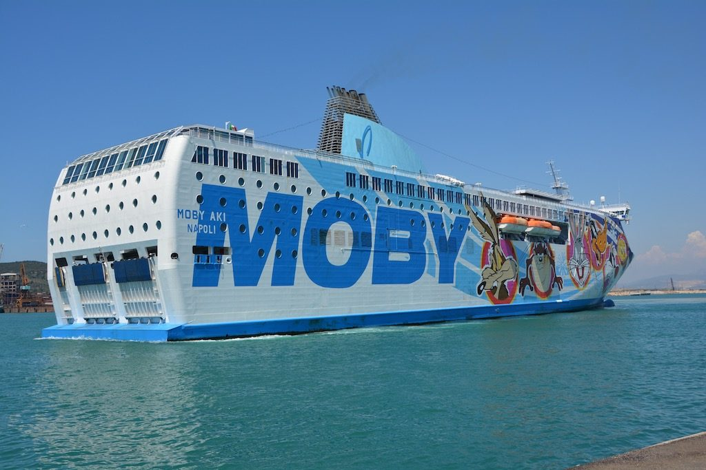

For those who don't want to limit their visit to the "boot" only, there is a very good ferry connection between the mainland and the most beautiful Italian islands.
The following is a list of websites representing the major ferry companies in Italy:
- Tirrenia Navigazione - Serving Sardinia, Sicily, and the Tremiti Islands.
- Grandi Navi Veloci - Serving Sardinia and Sicily.
- SNAV - Serving Sardinia, Sicily, Capri, Ischia, Procida, the Aeolian Islands, and the Pontine Islands.
- Moby Lines - Serving Sardinia, Sicily, the Tremiti Islands and Elba Island.
- Visit TraghettiWeb for more information.
Most ferries allow cars, trailers, and motorcycles on board. The most important thing to remember is to reserve your spot well in advance if you are planning to travel during the summertime. The islands are very popular during this time and ferries are very crowded as a result.
If you take your car (or another vehicle) on the ferry, remember to show up at least 2 hours (or even more) before the departure time. Companies reserve the right not only to refuse to let you on the ferry but also not to refund your ticket if you arrive too late.
Many companies offer night crossings, especially to farther islands. Travelers can choose between cabins and regular seats (or the deck itself, but only in summertime and on certain ships).
Bigger ships provide services such as restaurants, bars (coffee houses) and some even have small movie theaters.
Ticket prices vary according to the type of accommodation chosen (cabin, seat or deck), the type of vehicle, and date and time of the trip. Round trip fares are more convenient than one way. Tickets can be purchased at travel agencies or by contacting the ferry companies directly.
{This is an excerpt from chapter 1 “
General transportation” of the eBook “
Italy from the Inside. A native Italian reveals the secrets of traveling in Italy”. Buy our eBook on
Amazon and leave us a review! If it’s good, you’ll make us happy, if it’s bad, you’ll make us improve. Thank you either way!}